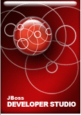

JBoss Developer Studio(JBDS)/OpenShift Lab
Goal: To create a JBoss application with JBDS and run it on OpenShift.
 If all this GIT and CLI stuff is not your style checkout JDBS!
JBDS Requires a => v1.6 JRE
Download and install JBDS(instructor may have a local download area)
The Big Picture
- Create a JBDS Project
- Create an OpenShift Application
- Link the two together
- Publish (push) your application to OpenShift
- Start JBDS. In the Project Examples Tab open the JBoss Quickstarts tab and choose the kitchensink, helloworld or greeter example.
- Optionally, run the app locally.
- Create a new OpenShift Application from JBoss Central tab (use a jbosseap cartridge).
- Uncheck create a new project and browse for an existing JBDS project.
- When this wizard finshes an OpenShift app was created but your local contents have not been published.
- Open the Server tab near the bottom and expand your openshift application.
- Right click on your project and choose 'full publish'.
- The first publish will take some time for the maven artifacts to be downloaded.
- Now make some changes to the app and republish